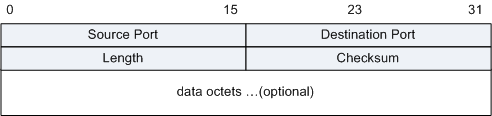
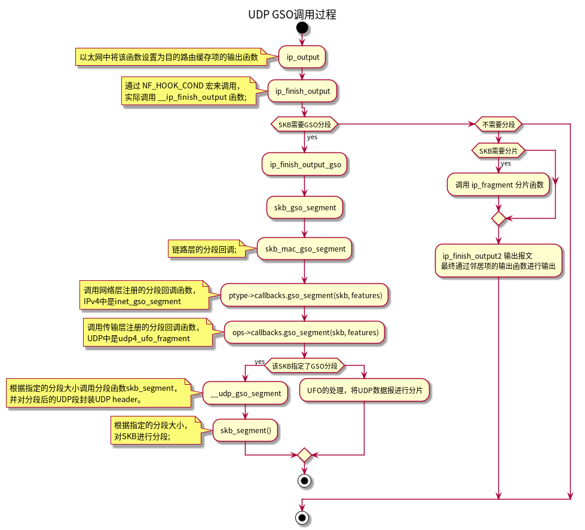
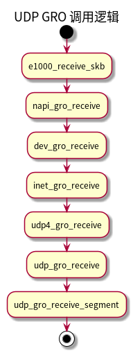

分段卸载
Table of Contents
| 分段卸载技术 | 缩写 | 描述 |
|---|---|---|
| TCP Segmentation Offload | TSO | TCP分段卸载 |
| UDP Fragmentation Offload | UFO | UDP分片卸载 |
| Generic Segmentation Offload | GSO | 通用分段卸载 |
| Generic Receive Offload | GRO | 通用接收卸载 |
1. 报文格式
1.1. 以太网帧格式

| 字段 | 长度 | 含义 |
|---|---|---|
| DMAC | 6字节 | 目的MAC地址，IPV4为6字节，该字段确定帧的接收者。 |
| SMAC | 6字节 | 源MAC地址，IPV4为6字节，该字段标识发送帧的工作站。 |
| Type | 2字节 | 协议类型。例如IPv4、IPv6等。 |
| Data | 变长 | 数据字段的最小长度必须为46字节以保证帧长至少为64字节，这意味着传输一字节信息也必须使用46字节的数据字段。 如果填入该字段的信息少于46字节，该字段的其余部分也必须进行填充。数据字段的最大长度为1500字节。 |
| CRC | 4字节 | 用于帧内后续字节差错的循环冗余检验（也称为FCS或帧检验序列）。 |
1.2. IP数据报

| 字段 | 长度 | 含义 |
|---|---|---|
| Version | 4比特 |
|
| IHL | 4比特 | 首部长度，如果不带Option字段，则为20，最长为60，该值限制了记录路由选项。以4字节为一个单位。 |
| Type of Service | 8比特 | 服务类型。只有在有QoS差分服务要求时这个字段才起作用。 |
| Total Length | 16比特 | 总长度，整个IP数据报的长度，包括首部和数据之和，单位为字节，最长65535，总长度必须不超过最大传输单元MTU。 |
| Identification | 16比特 | 标识，主机每发一个报文，加1，分片重组时会用到该字段。 |
| Flags | 3比特 | 标志位： 图2 IP Flag字段格式

|
| Fragment Offset | 12比特 | 片偏移：分片重组时会用到该字段。表示较长的分组在分片后，某片在原分组中的相对位置。以8个字节为偏移单位。 |
| Time to Live | 8比特 | 生存时间：可经过的最多路由数，即数据包在网络中可通过的路由器数的最大值。 |
| Protocol | 8比特 | 协议：下一层协议。指出此数据包携带的数据使用何种协议，以便目的主机的IP层将数据部分上交给哪个进程处理。 |
| Header Checksum | 16比特 | 首部检验和，只检验数据包的首部，不检验数据部分。这里不采用CRC检验码，而采用简单的计算方法。 |
| Source Address | 32比特 | 源IP地址。 |
| Destination Address | 32比特 | 目的IP地址。 |
| Options | 可变 | 选项字段，用来支持排错，测量以及安全等措施，内容丰富（请参见下表）。选项字段长度可变，从1字节到40字节不等，取决于所选项的功能。 |
| Padding | 可变 | 填充字段，全填0。 |
1.3. TCP
| 字段 | 长度 | 含义 |
|---|---|---|
| Source Port | 16比特 | 源端口，标识哪个应用程序发送。 |
| Destination Port | 16比特 | 目的端口，标识哪个应用程序接收。 |
| Sequence Number | 32比特 | 序号字段。TCP链接中传输的数据流中每个字节都编上一个序号。序号字段的值指的是本报文段所发送的数据的第一个字节的序号。 |
| Acknowledgment Number | 32比特 | 确认号，是期望收到对方的下一个报文段的数据的第1个字节的序号，即上次已成功接收到的数据字节序号加1。只有ACK标识为1，此字段有效。 |
| Data Offset | 4比特 | 数据偏移，即首部长度，指出TCP报文段的数据起始处距离TCP报文段的起始处有多远，以32比特（4字节）为计算单位。最多有60字节的首部，若无选项字段，正常为20字节。 |
| Reserved | 6比特 | 保留，必须填0。 |
| URG | 1比特 | 紧急指针有效标识。它告诉系统此报文段中有紧急数据，应尽快传送（相当于高优先级的数据）。 |
| ACK | 1比特 | 确认序号有效标识。只有当ACK=1时确认号字段才有效。当ACK=0时，确认号无效。 |
| PSH | 1比特 | 标识接收方应该尽快将这个报文段交给应用层。接收到PSH = 1的TCP报文段，应尽快的交付接收应用进程，而不再等待整个缓存都填满了后再向上交付。 |
| RST | 1比特 | 重建连接标识。当RST=1时，表明TCP连接中出现严重错误（如由于主机崩溃或其他原因），必须释放连接，然后再重新建立连接。 |
| SYN | 1比特 | 同步序号标识，用来发起一个连接。SYN=1表示这是一个连接请求或连接接受请求。 |
| FIN | 1比特 | 发端完成发送任务标识。用来释放一个连接。FIN=1表明此报文段的发送端的数据已经发送完毕，并要求释放连接。 |
| Window | 16比特 | 窗口：TCP的流量控制，窗口起始于确认序号字段指明的值，这个值是接收端正期望接收的字节数。窗口最大为65535字节。 |
| Checksum | 16比特 | 校验字段，包括TCP首部和TCP数据，是一个强制性的字段，一定是由发端计算和存储，并由收端进行验证。在计算检验和时，要在TCP报文段的前面加上12字节的伪首部。 |
| Urgent Pointer | 16比特 | 紧急指针，只有当URG标志置1时紧急指针才有效。TCP的紧急方式是发送端向另一端发送紧急数据的一种方式。紧急指针指出在本报文段中紧急数据共有多少个字节（紧急数据放在本报文段数据的最前面）。 |
| Options | 可变 | 选项字段。TCP协议最初只规定了一种选项，即最长报文段长度（数据字段加上TCP首部），又称为MSS。MSS告诉对方TCP“我的缓存所能接收的报文段的数据字段的最大长度是MSS个字节”。 新的RFC规定有以下几种选型：选项表结束，无操作，最大报文段长度，窗口扩大因子，时间戳。
|
| Padding | 可变 | 填充字段，用来补位，使整个首部长度是4字节的整数倍。 |
| data | 可变 | TCP负载。 |
1.4. UDP

| 字段 | 长度 | 描述 |
|---|---|---|
| Source Port | 2字节 | 标识哪个应用程序发送（发送进程）。 |
| Destination Port | 2字节 | 标识哪个应用程序接收（接收进程）。 |
| Length | 2字节 | UDP首部加上UDP数据的字节数，最小为8。 |
| Checksum | 2字节 | 覆盖UDP首部和UDP数据，是可选的。 |
| data octets | 变长 | UDP负载，可选的。 |
2. IP分片
如果IP数据报长度超出最大传输单元MTU，并且允许分片时，就需要进行IP分片处理。 以太网MTU为1500B，通常UDP协议发送的数据报容易导致IP分片，而TCP协议通常不会产生分片。
一个传输层数据包在IP分片后，如果在传输过程中，一个或者若干个IP分片丢失，会导致接收端无法进行分片重组，进而丢弃已接收的其他分片，而发送端则需要重新发送整个数包。
TCP在发送应用层数据时，会将数据按照MSS进行拆分，以避免IP分片。
UDP要避免IP分片，则一般需要在应用层进行控制，每次发送的数据包不超过 MTU-sizeof(udp header)-sizeof(ip header)，在以太网中则为 1500-20-8=1472 （不包含IP选项）。
IP数据报分片后，独立选择路由，在所有分片达到目的主机后，目的主机IP层会先将其组装为完整的IP数据报，再交给传输层处理。
分片过程需要将网络层的有效负载根据MTU分为一个一个的片段，对每个分片设置IP首部，更新IP校验和。
现在假设有一个payload长度为4452字节的UDP数据包：
- 分片格式
3. TCP分段卸载 TSO
当网络设备支持TSO时，可以将TCP的单个帧分割为多个帧，数据的payload大小通过 skb_shinfo(skb)->gso_size 来指定。
网卡开启TSO之后，TCP的发送方将数据拆分为MSS整数倍大小的数据块，然后将大块的数据分段直接交给网络设备处理，这种情况下，操作系统需要创建和处理的数据包数量更少，性能会有较大的提高。
3.1. TCP数据段的发送
首先大概了解一下TCP数据的发送过程，tcp的传输层发送接口是 tcp_sendmsg() 函数。
3.1.1. 文件描述符关联到传输控制块
struct proto tcp_prot = { .name = "TCP", .owner = THIS_MODULE, .close = tcp_close, .pre_connect = tcp_v4_pre_connect, .connect = tcp_v4_connect, .disconnect = tcp_disconnect, .accept = inet_csk_accept, .ioctl = tcp_ioctl, .init = tcp_v4_init_sock, .destroy = tcp_v4_destroy_sock, .shutdown = tcp_shutdown, .setsockopt = tcp_setsockopt, .getsockopt = tcp_getsockopt, .bpf_bypass_getsockopt = tcp_bpf_bypass_getsockopt, .keepalive = tcp_set_keepalive, .recvmsg = tcp_recvmsg, .sendmsg = tcp_sendmsg, .sendpage = tcp_sendpage, .backlog_rcv = tcp_v4_do_rcv, .release_cb = tcp_release_cb, .hash = inet_hash, .unhash = inet_unhash, //...... };
3.1.2. 系统调用过程
3.1.3. 发送过程
发送过程：
- 获取可以发送到网卡的最大段长度;
- 查看发送队列的最后一个SKB是否有有空间，有则继续填充数据。
- 如果没有空间，则分配新的SKB，并拷贝用户空间数据到SKB。
- 传输层和网络层的首部、选项、校验和等的处理。
- 在提交给网络设备之前判断是否需要进行软分段，需要则进行软分段。
3.2. 未启用TSO
- 数据发送过程
3.3. 启用TSO
- 数据发送过程
3.4. 验证
利用 bpftrace 跟踪发送到网卡的SKB长度，下面的例子是访问一个2GB的文件时，统计发送的SKB长度区间。由于使用的虚拟机，其虚拟网卡（virtio_netdev）的发送接口使用的 start_xmit 函数。
#! /usr/bin/bpftrace #include <linux/skbuff.h> BEGIN { printf("跟踪start_xmit发送的SKB长度大小，Ctrl-C结束.\n"); } kprobe:start_xmit { $skb = ((struct sk_buff *)arg0); @skb_len = hist($skb->len); }
关闭tso时，MSS为1460，所以发送的SKB长度应当在 1024 ～ 2048 之间。
$ sudo ./start_xmit.bt Attaching 2 probes... 跟踪start_xmit发送的SKB长度大小，Ctrl-C结束. ^C @skb_len: [64, 128) 7 | | [128, 256) 4 | | [256, 512) 983 | | [512, 1K) 258 | | [1K, 2K) 1482805 |@@@@@@@@@@@@@@@@@@@@@@@@@@@@@@@@@@@@@@@@@@@@@@@@@@@@|
开启tso时，最大可以发送 65535 - ip头长度 - tcp头长度，所以SKB长度会在 32K ～ 64K 之间。
sudo ./start_xmit.bt Attaching 2 probes... 跟踪start_xmit发送的SKB长度大小，Ctrl-C结束. ^C @skb_len: [64, 128) 3 | | [128, 256) 1 | | [256, 512) 0 | | [512, 1K) 0 | | [1K, 2K) 4 | | [2K, 4K) 1 | | [4K, 8K) 9 | | [8K, 16K) 11 | | [16K, 32K) 31 | | [32K, 64K) 32950 |@@@@@@@@@@@@@@@@@@@@@@@@@@@@@@@@@@@@@@@@@@@@@@@@@@@@|
3.5. 如何配置tso
- 查看网卡特性
$ ethtool -k eth0
Features for eth0:
rx-checksumming: on
tx-checksumming: on
tx-checksum-ipv4: off [fixed]
tx-checksum-ip-generic: on
tx-checksum-ipv6: off [fixed]
tx-checksum-fcoe-crc: on [fixed]
tx-checksum-sctp: on
scatter-gather: on
tx-scatter-gather: on
tx-scatter-gather-fraglist: off [fixed]
tcp-segmentation-offload: on
tx-tcp-segmentation: on
tx-tcp-ecn-segmentation: off [fixed]
tx-tcp-mangleid-segmentation: on
tx-tcp6-segmentation: on
udp-fragmentation-offload: off [fixed]
generic-segmentation-offload: off
generic-receive-offload: on
......
- 开启/关闭 TSO
$ ethtool -K eth0 tso on/off
4. UDP分片卸载 UFO
UDP分片卸载允许设备将过大的UDP数据报拆分为多个IPv4分片。 单个IPv4数据报被分片后，具有相同的 ID。
现在UFO已经弃用，现代内核已经不再生成UFO数据包。
5. 通用分段卸载 GSO
GSO是一个纯软件实现的分段卸载，用于不支持硬件分段卸载的情况。
$ ethtool -k eth0 gso on/off
5.1. TCP GSO
和TSO功能相同，只是用软件的形式来实现TSO功能。
5.2. UDP GSO
UDP的GSO功能需要应用层配合使用，应用层首先需要通过 setsockopt() 接口设置分段大小，设置分段的选项为 UDP_SEGMENT ：
int val = segment_len; setsockopt(fdt, SOL_UDP, UDP_SEGMENT, &val, sizeof(val));
也可以通过 struct cmsghdr 消息来指定分段的大小：
{
char control[CMSG_SPACE(sizeof(uint16_t))] = {0};
struct msghdr msg = {0};
struct iovec iov = {0};
struct cmsghdr *cm;
iov.iov_base = buf; //指定待发送的数据
iov.iov_len = len; //待发送数据的长度
msg.msg_iov = &iov;
msg.msg_iovlen = 1;
msg.msg_name = addr;
msg.msg_namelen = alen;
msg.msg_control = control;
msg.msg_controllen = sizeof(control);
cm = CMSG_FIRSTHDR(&msg);
cm->cmsg_level = SOL_UDP;
cm->cmsg_type = UDP_SEGMENT; //设置控制消息类型，UDP_SEGMENT表示配置分段大小
cm->cmsg_len = CMSG_LEN(sizeof(uint16_t)); //控制消息的值长度
*((uint16_t *) CMSG_DATA(cm)) = gso_len; //分段大小
sendmsg(); //发送
}
5.2.1. UDP和TCP的区别
为何TCP不需要应用层的参与，而UDP需要呢？
UDP是无连接的，发送过程中，保证不了先后顺序，每个数据报只能通过udp header获取payload的长度，如果将不同长度的payload合并，那么在分段之后，原始payload的之间的边界就会丢失。
我们假设MSS是 10bytes。
1. 现在有三个数据段a、b、c要发送，数据长度分别是7bytes、5bytes，10bytes，通常情况下，
我们会对三个数据段分别调用sendmsg发送，或者通过sendmmsg一次性发送。
7 5 10
+-------+ +-----+ +----------+
|aaaaaaa| |bbbbb| |cccccccccc|
+-------+ +-----+ +----------+
2. 如果应用层不指定分段长度，直接将数据合并进行发送。协议栈直接进行合并，合并后的数据如下，此时数据报边界已经丢失。
22
+-------+-----+----------+
|aaaaaaa|bbbbb|cccccccccc|
+-------+-----+----------+
3. 经过GSO分段后的数据报如下。
10 10 2
+----------+ +----------+ +--+
|aaaaaaabbb| |bbcccccccc| |cc|
+----------+ +----------+ +--+
4. 之后通过网卡传输，在网络上传输时，数据报的先后顺序可能发生变化，假如接收到的数据报的顺序如下。
2 10 10
+--+ +----------+ +----------+
|cc| |bbcccccccc| |aaaaaaabbb|
+--+ +----------+ +----------+
5. 如果通过GRO合并，则变为以下格式。
22
+----------------------+
|ccbbccccccccaaaaaaabbb|
+----------------------+
此时，数据格式已经完全变了。
基于以上假设，我们知道，UDP不能自主进行分段，应用层必须指定分段大小，之后，按固定的分段大小对数据进行分段。
5.2.2. UDP分段过程

commit ee80d1ebe5ba7f4bd74959c873119175a4fc08d3 Author: Willem de Bruijn <willemb@google.com> Date: Thu Apr 26 13:42:16 2018 -0400 udp: add udp gso Implement generic segmentation offload support for udp datagrams. A follow-up patch adds support to the protocol stack to generate such packets. UDP GSO is not UFO. UFO fragments a single large datagram. GSO splits a large payload into a number of discrete UDP datagrams. The implementation adds a GSO type SKB_UDP_GSO_L4 to differentiate it from UFO (SKB_UDP_GSO). IPPROTO_UDPLITE is excluded, as that protocol has no gso handler registered. [ Export __udp_gso_segment for ipv6. -DaveM ] Signed-off-by: Willem de Bruijn <willemb@google.com> Signed-off-by: David S. Miller <davem@davemloft.net>
6. 通用接收卸载 GRO
GRO是用来将网卡收到的多个数据包合并为一个大的数据段，提升协议栈处理性能。
6.1. 开启/关闭 GRO
# ethtool -k eth0 gro on/off
6.2. TCP GRO
对于TCP来说，GRO选项开启后，就会进行数据的合并，无需应用层改动。
6.3. UDP GRO
UDP不能随意合并，由于数据报本身没有顺序，如果将不同大小的数据合并后，应用层无法得知原始数据报的内容，并且也无法区分合并前的数据报。 长度相同的udp段合并后，通过控制消息通知到应用层，告知分段大小及数量。
UDP如果要使用GRO功能，需要通过配置socket的UDP_GRO选项来开启GRO功能。
udp拼接时，仅当udp包具有相同大小时，才会进行合并，并告诉应用层udp数据包的长度信息。
6.3.1. 原理说明

6.3.2. 验证测试
linux内核源码中附带了两个测试工具，用来测试udpgso性能。
- linux/tools/testing/selftests/net/udpgso_bench_rx.c
- linux/tools/testing/selftests/net/udpgso_bench_tx.c
1 启动接收端
$ udpgso_bench_rx -p 6666 -S 1000 -G -4 -r # 端口6666 分段大小1000 ipv4
2 统计udp_gro_receive函数调用栈次数
# stackcount-bpfcc 'udp_gro_receive' Tracing 1 functions for "udp_gro_receive"... Hit Ctrl-C to end.
3 启动发送端，指定数据大小20000，分段大小1000。
$ udpgso_bench_tx -p 6666 -S 1000 -D 192.168.75.100 -4 -s 20000 -l1 -c -M 1
4 停止第二步的调用栈统计。
# stackcount-bpfcc 'udp_gro_receive' Tracing 1 functions for "udp_gro_receive"... Hit Ctrl-C to end. ^C b'udp_gro_receive' b'udp4_gro_receive' b'inet_gro_receive' b'dev_gro_receive' b'napi_gro_receive' b'virtnet_poll' b'net_rx_action' b'__softirqentry_text_start' b'asm_call_on_stack' b'do_softirq_own_stack' b'irq_exit_rcu' b'common_interrupt' b'asm_common_interrupt' b'native_safe_halt' b'default_idle' b'default_idle_call' b'do_idle' b'cpu_startup_entry' b'secondary_startup_64_no_verify' 20 # 表示该调用栈执行了20次 Detaching...
6.3.3. 代码示例
- 开启GRO选项
首先需要通过setsockopt系统调用，打开该套接字的 UDP_GRO 特性。
int val = 1; setsockopt(fd, IPPROTO_UDP, UDP_GRO, &val, sizeof(val))
- GRO的数据接收处理
static int recv_msg(int fd, char *buf, int len, int *gso_size) { char control[CMSG_SPACE(sizeof(uint16_t))] = {0}; struct msghdr msg = {0}; struct iovec iov = {0}; struct cmsghdr *cmsg; uint16_t *gsosizeptr; int ret; //初始化接收数据缓冲区和长度 iov.iov_base = buf; iov.iov_len = len; msg.msg_iov = &iov; msg.msg_iovlen = 1; //初始化用于接收控制消息的内存空间 msg.msg_control = control; msg.msg_controllen = sizeof(control); *gso_size = -1; ret = recvmsg(fd, &msg, MSG_TRUNC | MSG_DONTWAIT); if (ret != -1) { for (cmsg = CMSG_FIRSTHDR(&msg); cmsg != NULL; cmsg = CMSG_NXTHDR(&msg, cmsg)) { if (cmsg->cmsg_level == SOL_UDP && cmsg->cmsg_type == UDP_GRO) { //检查是否是GRO合并后的数据包 gsosizeptr = (uint16_t *) CMSG_DATA(cmsg); *gso_size = *gsosizeptr; //获取合并前的数据分段大小 break; } } } return ret; }
6.3.4. 抓包示例
发送端发送数据包payload长度为20001，指定分段长度是1000，所以在收到数据包时，应当是 20(长度为1000)+1(长度为1)=21 个数据包。
- 当关闭GRO时，数据包是原始数据包，没有进行合并。
Figure 1: UDP关闭GRO
- 开启GRO时，数据包被合并。
Figure 2: UDP开启GRO